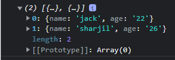
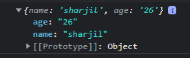
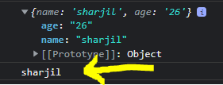
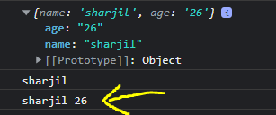

console.log(fnds); Printed the below output from the fnds Obj file, it returns us the two Array of obejcts.
console.log(fnds[1]); is a syntax which gives the Array on 1st Index of 'fnds' data' Object.
console.log(fnds[1].name); We can Target any value from the Obj by selecting the Index[] postion of the Element and .dot to choose it.
console.log(fnds[1].name, fnds[1].age); We can also take Multile values from Array of Object by selecting the Index[] position and choose value .dot for multiple objects.
